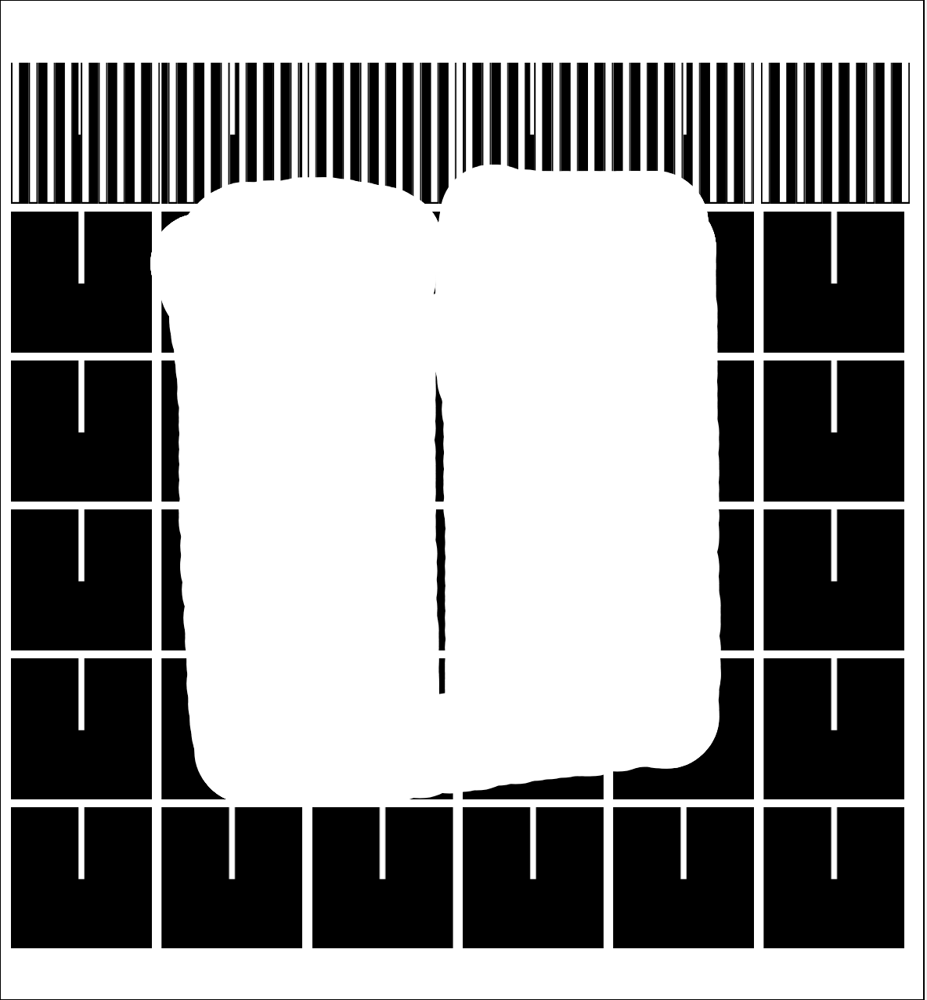
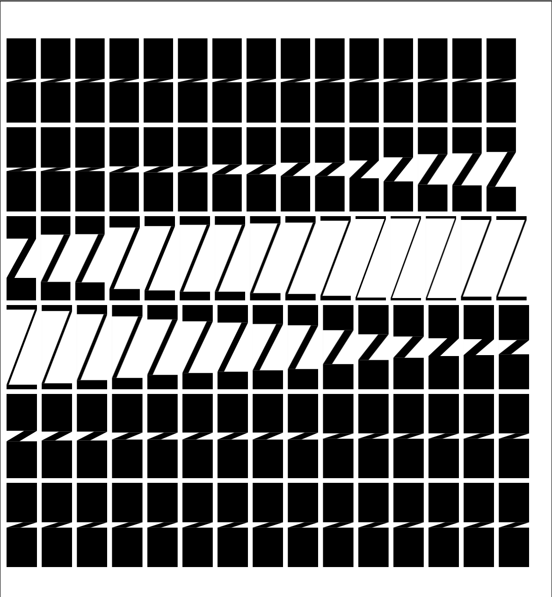
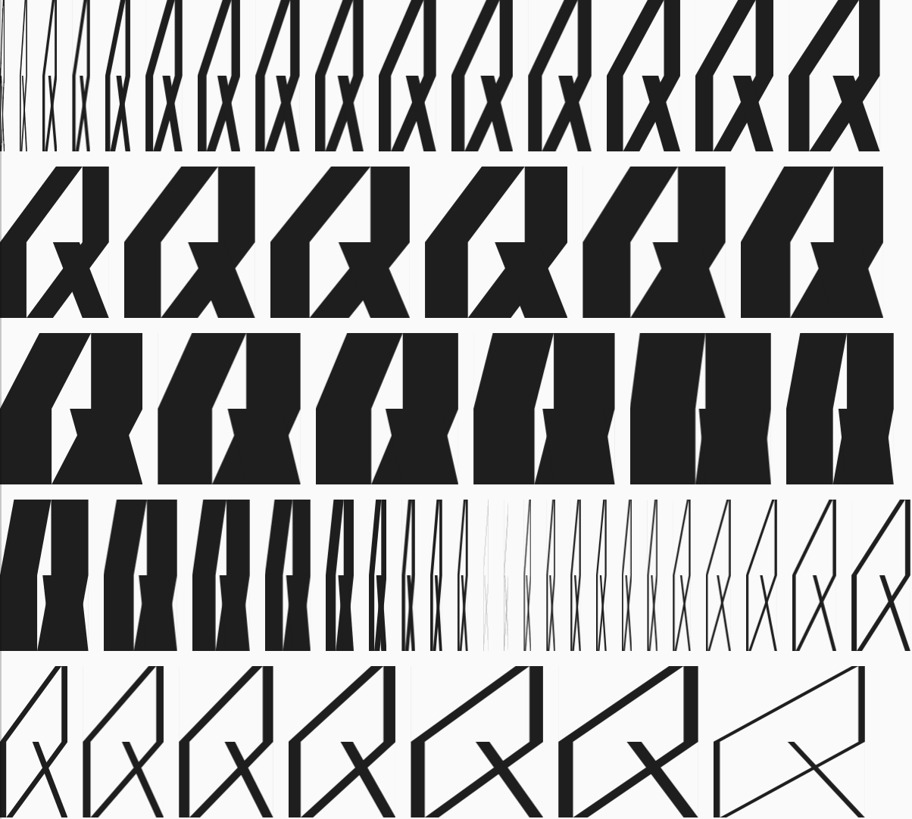
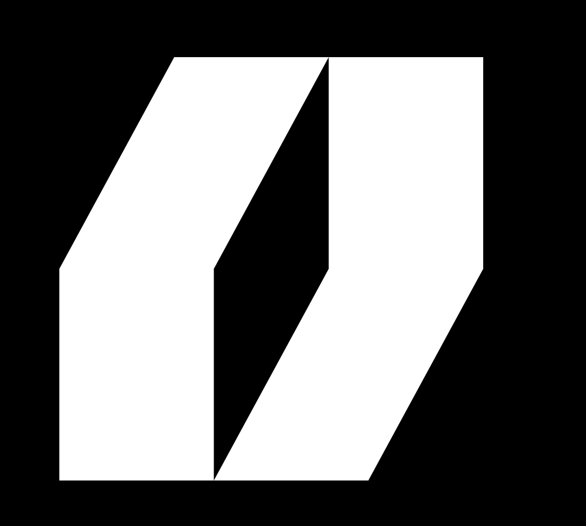

lude is a computer generated alphabet with a simple geometrical structure which evolves based on the user input.
Inspired by the uprising of open-type fonts and other variable typefaces, the alphabet aims to explore the potential of modular
letters outside of the strict framework of softwares and file formats. In the radical square grid, the alphabet unfolds - becomes slimmer or thicker - depending on the user’s movement on the screen.
he alphabet was entirely programmed using javascript in the P5.js framework, which is specifically designed to code webpages. Each letter consists of a simple and singular combination of rectangle and parallelogram. This minimal vocabulary allows the
letters to have a strong coherency while being in constant motion.
n order to experience this variable alphabet, I designed a type processor which is available on the platform. It aims to give each visitor of the website the opportunity to play around with a modular typesetter and express their creative potential. On the webpage, the user can intuitively select the size and weight of each letter on a virtual keyboard before clicking on it to write it. This customised text prints on a downloadable poster. This system of transformation questions the potential of letters as vector of emotions, very much like emojis nowadays. 🤫 🤩 😍
Elude is a computer generated alphabet with a simple geometrical structure which evolves based on the user input.
Inspired by the uprising of open-type fonts and other variable typefaces, the alphabet aims to explore the potential of modular
letters outside of the strict framework of softwares and file formats. In the radical square grid, the alphabet unfolds - becomes slimmer or thicker - depending on the user’s movement on the screen.
The alphabet was entirely programmed using javascript in the P5.js framework, which is specifically designed to code webpages. Each letter consists of a simple and singular combination of rectangle and parallelogram. This minimal vocabulary
allows the letters to have a strong coherency while being in constant motion.
In order to experience this variable alphabet, I designed a type processor which is available on the platform. It aims to give each visitor of the website the opportunity to play around with a modular typesetter and express their creative
potential. On the webpage, the user can intuitively select the size and weight of each letter on a virtual keyboard before clicking on it to write it. This customised text prints on a downloadable poster. This system of transformation questions
the potential of letters as vector of emotions, very much like emojis nowadays.
🤫 🤩 😍



